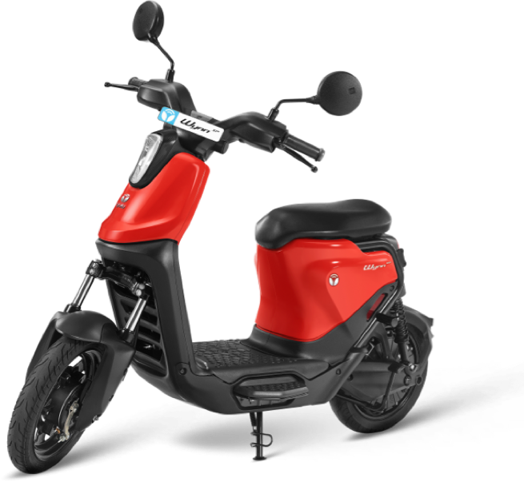

Moving India
towards a sustainable future
Micro-mobility solutions that help reduce traffic congestion and air pollution
Micro-mobility solutions that help reduce traffic congestion and air pollution
 |
Download YULU appDownload the Yulu app from the |
 |
Locate a YuluUse the Yulu app to find the |
 |
Scan the QR code To unlock the vehicle, simply scan |
 |
Ride SafelyEnjoy the Yulu ride but remember |
 |
End your ride To end your ride, park the vehicle at |

'It's intelligent. It's easy-to-ride. It's for everyone. India's first EasyMo is here!'
In the latest episode of NDTV Profit's The Disruptors, Tamanna Inamdar sat down for an exclusive conversation with Yulu co-founder & CEO, Amit Gupta. Amit shares how Yulu came into existence and how it is powering India's quick commerce space.
India has firmly established itself as the third-largest startup ecosystem in the world. The nation's entrepreneurial landscape, fuelled by more than 100 unicorns, is redefining innovation and creating new opportunities across sectors. Listen to Yulu co-founder and CFO Anuj Tewari's viewpoint regarding it.
Today Yulu has evolved into a provider of low-speed electric scooters to delivery agents, with its Yulu Dex scooter. Now, with quick commerce beginning to emerge as the next, and potentially even bigger, opportunity in the country’s ecommerce market, Gupta is preparing Yulu to tap that growth.
Yulu, an Indian shared electric mobility provider, has launched the country's first WhatsApp-based Road Safety Learning Initiative targeting delivery personnel. The program has already seen participation from over 3,600 riders who have completed the initial educational module and received "Safe Rider Beginner" certifications.
From revolutionizing last-mile connectivity to powering your green deliveries, Yulu is shaping a sustainable future for India. In this exclusive Walk the Talk interview with ET Now, Yulu Co-founder & CEO, Amit Gupta, shares insights on how Yulu is driving India’s shift to sustainable urban mobility.
While Yulu presently commands a dominating 35-40% penetration in the key urban markets it presently serves, it aims to cater to as much as 60-70% of the last-mile delivery demand in India. In this video interview, Naveen Dachuri, Co-Founder and CTO, Yulu, talks about Yulu's next steps of growth.
Shared electric mobility start-up Yulu's shift to servicing the quick commerce sector is helping it grow fast. It is now focussing on improving road safety features as it turns EBITDA positive, has become a favourite for last-mile delivery and has expanded its reach into 12 cities now.
Amit Gupta, Co-founder and CEO of Yulu, shares the company's future plans. Gupta emphasizes India's growing quick commerce segment, Yulu's pivotal role in its growth, and the partnerships it maintains within the industry.
Shared electric vehicle mobility firm Yulu’s annual recurring revenue (ARR) crossed $30 million in 2024 and it turned Ebitda positive on growing demand from the quick commerce segment, the Bengaluru-based startup said on October 7.
Buoyed by an uptick in business, Bengaluru-based shared mobility firm Yulu is targeting an initial public offering (IPO) in the next two-three years, co-founder and CEO Amit Gupta said. The company is also close to achieving profitability, he said.